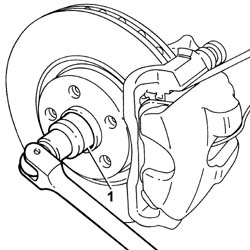
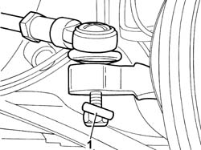
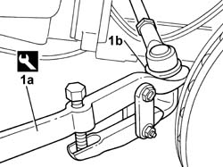
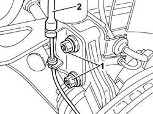
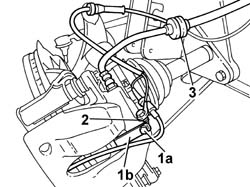
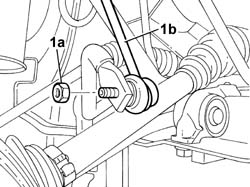
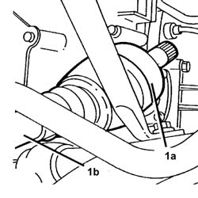

2710A10 DRIVE SHAFT WITH JOINTS (ONE), L/H OR R/H - R + R
- Path
- Procedures > 27 AXLE > 2710 FRONT AXLE > 2710A DRIVE SHAFTS AND JOINTS > 2710A10 DRIVE SHAFT WITH JOINTS (ONE), L/H OR R/H - R + R
- Kind
- repair procedure (removal / refitting; the operation number is the code)
- Applies to
- all engines; all production periods
- Interactive page
- https://sloeber94.github.io/elrnDB-fUlss/en/#/179007267
Applies to: all engines; all production periods
 Removing
Removing
 Refitting
Refitting- Position the vehicle on the lift.
Op. 7055B54 UNDER-ENGINE GUARD - R R
Op. 4450B04 RIGHT FRONT WHEEL R R
- Remove the split pin retaining the hub nut
- Remove the nut shield.
1. Prevent the wheel from turning and unscrew the hub nut.

Applies to: all engines; all production periods
1. Unscrew the steering link head nut.

Applies to: all engines; all production periods
1. Use tool (1a) to prise up the head of steering link (1b) from the connection on the steering knuckle.
 | Description | Code | Function |
|---|---|---|---|
1 | Head extractor | 1.847.035.000 | Removing steering rod |

Applies to: all engines; all production periods
1. Undo the bolts securing the shock absorber to the steering knuckle.
2. Release the ABS sensor cable from the retainer.

Applies to: all engines; all production periods
1. Undo the nut (1a) securing bracket (1b).
2. Remove the earth lead from the brake caliper mount.
3. Release the front brake fluid hose from the rubber block.

Applies to: all engines; all production periods
1. Unscrew nut (1a) securing the antiroll bar link (1b).

Applies to: all engines; all production periods
1. Prise up internal drive shaft (1a) from the differential, then remove left drive shaft (1b).

Applies to: all engines; all production periods
Refitting
Removing- Fit the driveshaft in the housing on the differential.
- Fit the constant velocity joint in the wheel hub.
- Tighten the bolts fixing the steering knuckle to the shock absorber to torque.
 | Value - daNm | Fastening | Component | Ø |
|---|---|---|---|---|
. | (Steering knuckle) 9 | Bolt | FRONT SHOCK ABSORBERS (S.M.) | - |
- Tighten the nuts secuing the anti-roll bar track rod ends to torque.
| Value - daNm | Fastening | Component | Ø |
|---|---|---|---|---|
. | (link) 5.5 | nut | FRONT ANTI-ROLL BAR | - |
- Position the front brake fluid hose on the rubber block.
- Fit the earth lead to the brake caliper mount.
- Tighten the bolt securing the bracket.
- Position the steering link head in the seat.
- Tighten the steering link head nut.
| Value - daNm | Fastening | Component | Ø |
|---|---|---|---|---|
. | (steering knuckle) 4 | Nut | ADJUSTABLE LINK BALL JOINTS | - |
- Prevent the wheel from turning and tighten the wheel hub nut.
| Value - daNm | Fastening | Component | Ø |
|---|---|---|---|---|
. | (Drive shaft) 10 | Nut | FRONT HUBS COMPLETE WITH BEARING | - |
- Fit the hub nut retaining split pin.
Op. 7055B54 UNDER-ENGINE GUARD - R R
Op. 4450B04 RIGHT FRONT WHEEL R R
- Remove the vehicle from the lift.